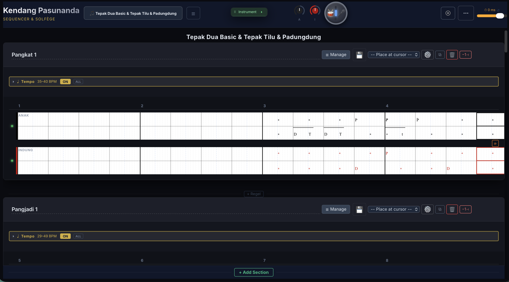

Kendang Pasunanda — UI Referentie
Overzicht van alle bedieningselementen in de applicatie

Header
| 🎵 |
Song-menu |
Opslaan (Update / Save as new / Save copy), nieuwe song, library openen, publiceer als template (admin) |
| ☰ |
Compositie-overzicht |
SongMap: regels bekijken, herordenen, snel navigeren naar een specifieke regel |
| ▸ Instrument |
Instrumentpaneel |
DrumPad en geluidsinstellingen. Klik driehoekje = open/sluit. Dubbelklik balk = open/sluit. Sleep balk = verplaats |
| A |
Volume Anak |
Sleep omhoog/omlaag voor volume. Dubbelklik = reset naar 100% |
| I |
Volume Indung |
Sleep omhoog/omlaag voor volume. Dubbelklik = reset naar 100% |
| ◎ |
Practice Mode |
Aan/uit. Blokkeert nootinvoer. Gouden kleur = actief. Playhead scrollt in beeld bij wisseling |
| ⋯ |
Tools-menu |
PDF export, PDF layout instellingen, handleiding, taalkeuze, account (e-mail, wachtwoord wijzigen, online/offline status), log uit |
| ⏱ |
Cursor sync offset |
Schuifregelaar voor Bluetooth/AirPlay vertraging compensatie. Bereik: -3000 tot +500 ms. ↺ = reset naar 0 |
Per regel (section)
| Naam |
Regelnaam |
Klik om te bewerken. Vult de beschikbare ruimte tot aan Manage |
| ≡ |
Manage |
Toon/verberg de snippet-opslag en snippet-manager knoppen |
| 💾 |
Snippet opslaan |
Selecteer eerst een bereik. Kies naam en map (dropdown met bestaande mappen of nieuwe map aanmaken) |
| ▾ Place at cursor |
Snippet invoegen |
Dropdown om een opgeslagen snippet in te voegen op de cursorpositie. Kan meerdere keren achter elkaar |
| ⚙️ |
Snippet Manager |
Hernoemen, verplaatsen, folder rename/delete, bulk-delete via checkboxes, templates bekijken, export/import |
| 📋 |
Dupliceer |
Maak een kopie van deze regel |
| 🗑 |
Verwijder |
Verwijder deze regel. Bevestigingsdialoog verschijnt |
| -1+ |
Maten |
Maat toevoegen (+) of verwijderen (-) aan deze regel |
Tempo (per regel)
| ▸ / ▾ |
Tempo open/dicht |
Klik = dit paneel. Dubbelklik = alle tempopanelen tegelijk. Tijdens afspelen: actieve regel opent automatisch |
| ♩ BPM |
Tempobereik |
Toont het BPM-bereik van deze regel. Dubbelklik in het tempovlak = punt toevoegen. Sleep punten = aanpassen |
| ON / OFF |
Tempo aan/uit |
Schakel tempo-automatisering per regel. Uit = globaal BPM. Laatste tempo erft door naar volgende regel |
| ALL |
Alles aan/uit |
Schakel alle tempo-tracks in de song tegelijk aan of uit |
| +1 / −1 |
Fijnafstemming |
Klik = +1 of -1 BPM. Ingedrukt houden = herhaalt (versnelt na 1 seconde). Verschijnt in zoom-popup |
Transport-balk (zwevend)
| ⠿ |
Sleep-handvat |
Sleep de transportbalk naar een andere positie op het scherm |
| BPM ▲▼ |
Globaal tempo |
Bereik 20–140 BPM. Klik getal = typ waarde. Sleep omhoog/omlaag = aanpassen. Pijltjes = +1/-1 |
| ◀ |
Rewind |
Klik = begin van huidige maat. Nog een keer = vorige maat. Dubbelklik = begin van song |
| ▶ |
Play / Stop |
Start/stop afspelen. Song stopt automatisch aan het einde tenzij een loop actief is |
| ↺ |
Loop |
Loop deze sectie aan/uit. Bij deactiveren tijdens afspelen: huidige iteratie speelt eerst af |
| ♩ ▾ |
Metronoom |
Klik = aan/uit. Tik ▾ = opties: 4-tel precount, 8-tel precount, click during play, volume slider |
| 2x tap balk |
Minimaliseer |
Dubbelklik op de transportbalk = minimaliseer tot alleen ◀ en ▶. Nogmaals = herstel |
Tracks (Anak / Indung)
| ● |
Mute-bolletje |
Groen = track speelt (met glow). Klik = dempen (grijs). Zit tussen anak en indung |
| 1 2 3 4 |
Maatliniaal |
Dubbelklik = 1-maat loop. Sleep meerdere maten = bredere loop. Dubbelklik ergens = loop wissen |
| ▼ |
Playhead |
Blauw driehoekje. Sleep om de cursor te verplaatsen. Scrollt automatisch mee bij rewind en mode-wisseling |
| Cellen |
Notatie-raster |
Klik = cursor plaatsen. Noot invoeren via pad of toetsenbord. Dubbelklik noot = verwijder. Sleep = verplaats |
| ⟳ |
Section loop |
Rechtsonder bij de track. Loop alleen deze regel. Klik meerdere regels = combineer |
Overig
| + Regel |
Regel invoegen |
Verschijnt tussen twee regels. Voegt een nieuwe lege regel in op die positie |
| + Add Section |
Regel toevoegen |
Voegt een nieuwe lege regel toe onderaan de song |
| ● |
Gewijzigd-indicator |
Gele stip naast de songnaam = niet-opgeslagen wijzigingen. Verdwijnt na Update of auto-save (5 sec) |
Sneltoetsen
| Spatie | Play / Stop | |
| Cmd+Z | Ongedaan maken | |
| Cmd+Shift+Z | Opnieuw | |
| Backspace | Wis selectie | |
| N C X V A J ; : L G F S | Klanken invoeren | Elke toets correspondeert met een kendang-slagtechniek |